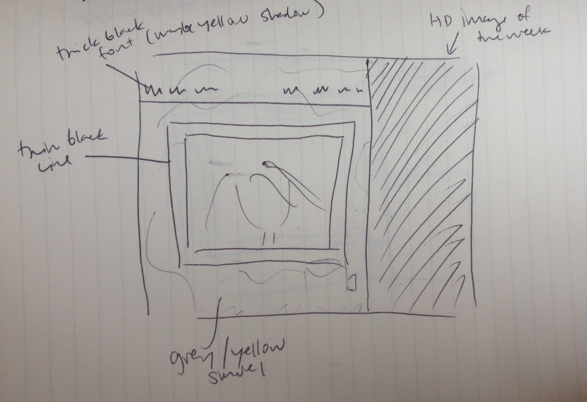
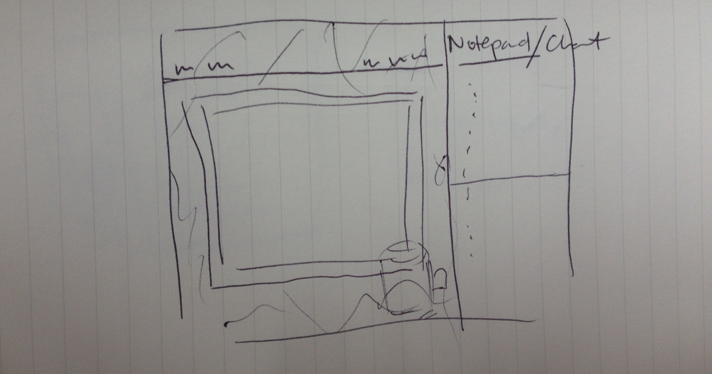
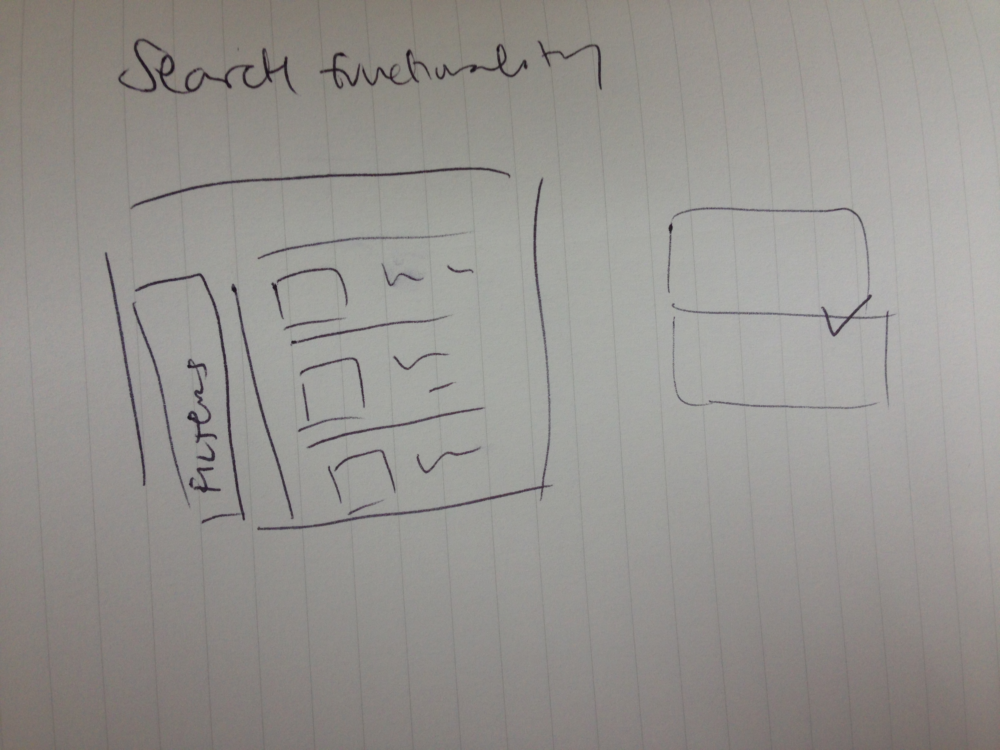

Unit 2: Design Challenge
Which two websites are you most inspired by?
How do they exhibit effective use of space, size, or balance?
- Andrea Milicanovic's athlete profile site makes excellent use of space within its tiles. By not getting carried away with font size, Andrea opens up enough negative space for the background image to shine. The relatively larger size of the accompanying buttons also invites viewers to click and explore further. Andrea uses balance to guide the viewer through the athlete's profile, spotlighting stats as the most important piece of the page. All the while, Andrea makes an effort to nestle the primary content she wants viewers to notice at-a-glance alongside the rest of the details a more dedicated fan would be interested in viewing.
- Like Andrea's site, the Wikipedia redesign leverages vivid photography tiles and negative space to offset a substantial amount of content. The negative space afforded by a beautiful visual with a relatively minimal headline give viewers a place to relax their eyes. The size of the image and headlines also draw attention and navigate the user flow from the current feature on through the rest of the content. The Wikipedia page also manages to balance a hefty amount of content with a bunch of navigation tabs without undermining or distracting the user from the primary content on the page. The proportions of each of the blocks of content are clearly well thought out.
What makes them similar and different?
- Both use vivid imagery as central focal points in their design. The athlete profile tends to mute the images a bit more though, and leans on pointed, contrasting, bright colors to engage the viewer. The Wikipedia page, on the other hand, leans on the imagery to provide the coloring and uses a more neutral blue throughout their content to break up blocks of text and encourage viewers to read through the copy.
- The wikipedia page also manages to balance content well enough to fit everything into one, interactive, above-the-line frame. The athlete's page though unravels as you scroll. The two reflect different assumptions about their viewers - either you show them everything at once or provide good enough teasers to engage them to explore further. Choosing one or the other probably depends more on the amount of info you expect your user to want at once, which in this case of widely different target audiences would of course vary.
- Both sites also leverage different sized tiles to organize their content and use thin dividers to simultaneously distinguish and blend the varied pieces of the site.
Thumbnail Sketches
- Screen with a View

- Screen with Productivity Tools

- Profile Search

- How are focal points, hierarchy, and balance demonstrated across these grid-based layouts?
Focal Points
- The first two thumbnails direct the users first glance towards the video chat screen. This focal point is intended to capture the viewers attention throughout their time on the page.
- The search page's initial focal point should actually be the search filters, but the profiles displayed in the results will comprise the main content for viewers on the site. For the filter to be more of the focal point, it should be spotlighted with other visuals like contrasting color or vivid imagery.
Hierarchy
- The hierarchy between these sites will need to be demonstrated via the navigation buttons in the page headers. The design should indicate which page(s) should come first. This could be done via visual grouping of the administrative and platform parts of the site.
- The smaller size of the non-screen blocks demonstrate the supplementary nature
Balance
- On second thought, I realize the hierarchy between elements of the site and the navigation header are off balance. Next iteration, I will lower the side panels to make space for the logo and the site-wide header.